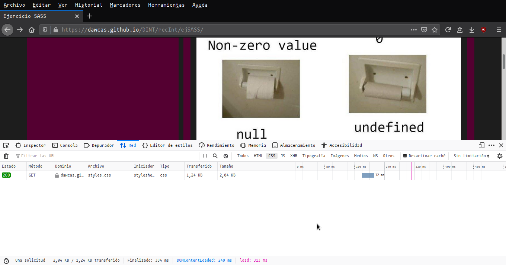
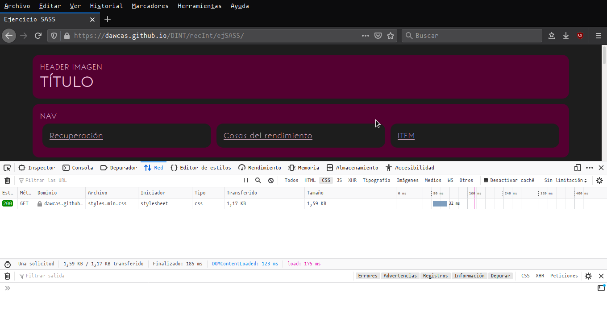
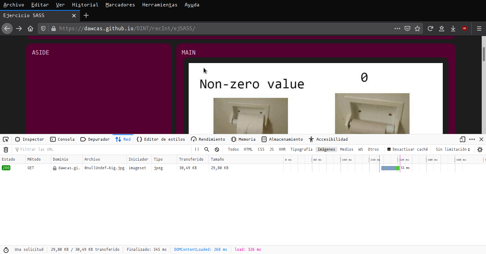
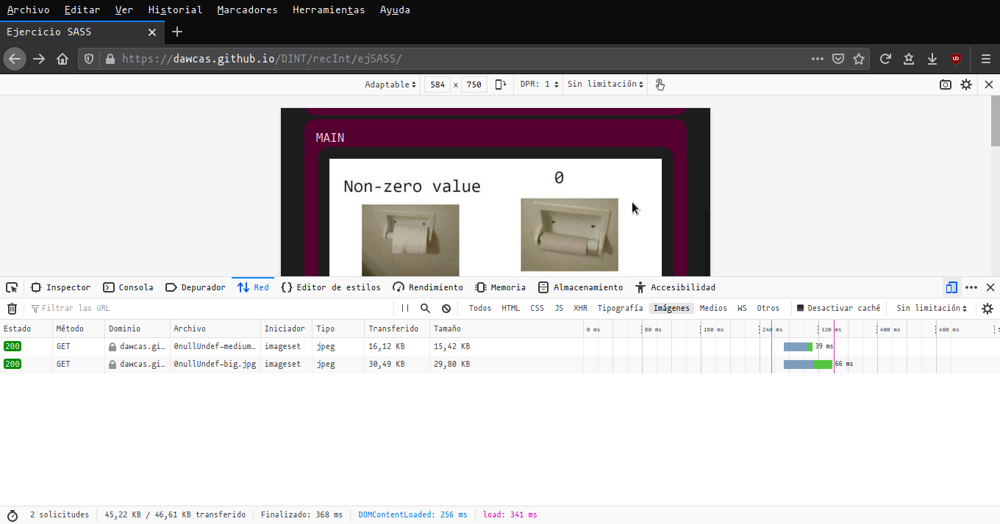
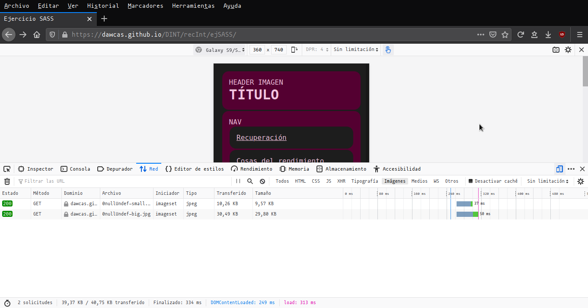
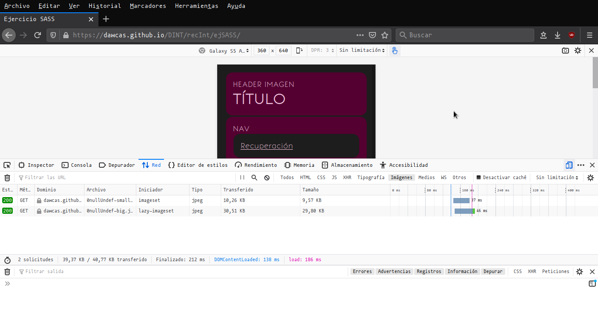
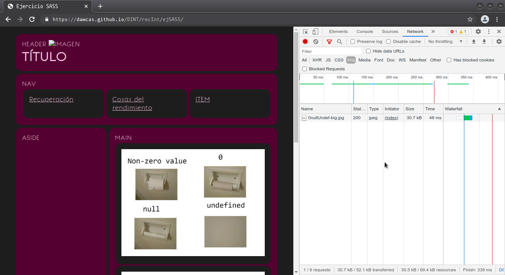
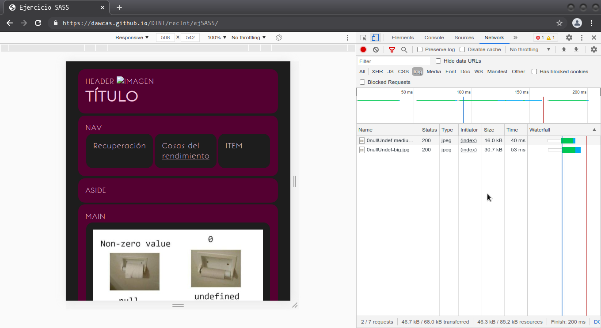
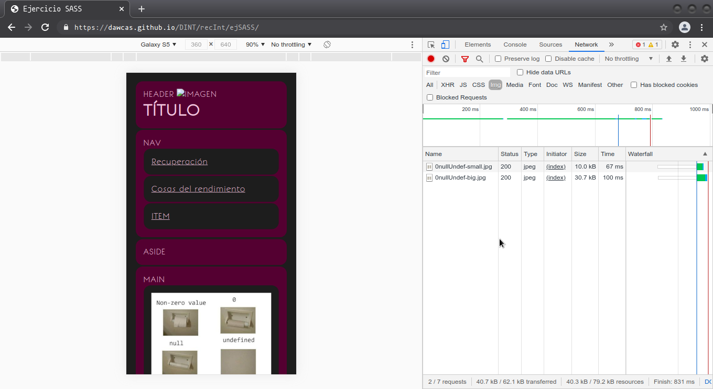

Carga del css normal.

Carga del css mínimo.

Carga de página grande.

Carga de página tablet.

Carga de página móvil.

Carga de imagen con atributo "loading='lazy'". Se carga con todo posiblemente por ser tan pequeña la página.
Carga de elementos en chrome:
Carga del css normal.Carga del css mínimo.

Carga de página grande.

Carga de página tablet.

Carga de página móvil.